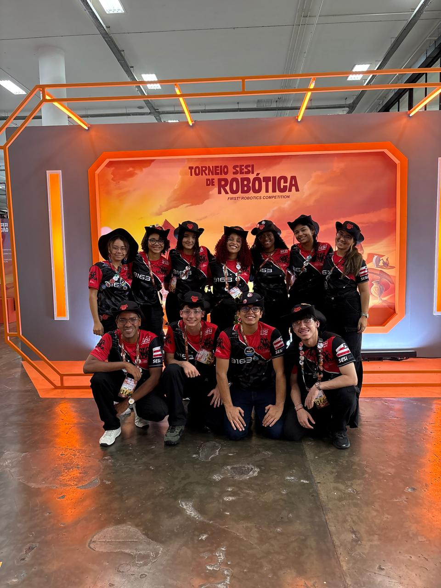
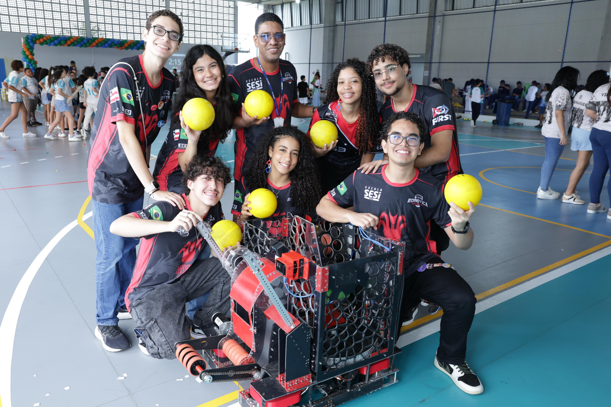
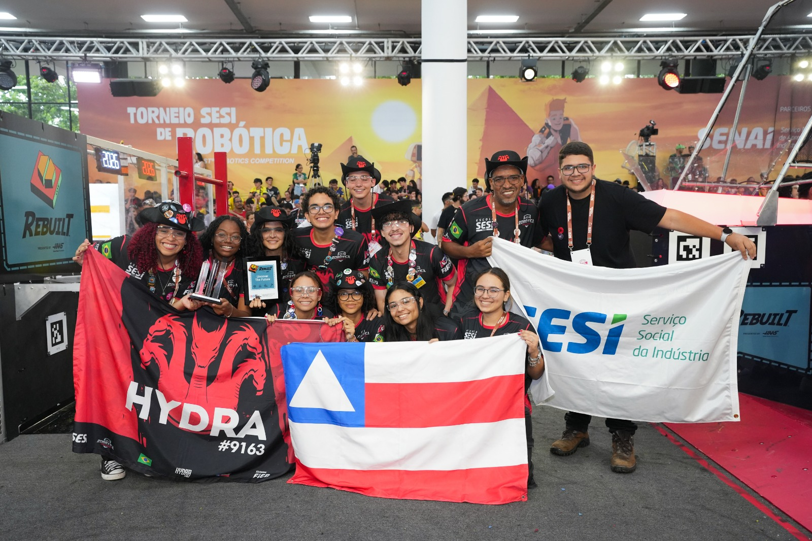

Sobre a Equipe
A HYDRA#9163 é uma equipe brasileira e baiana de robótica, que iniciou seus trabalhos em 2020 (período da pandemia do COVID-19), tendo a equipe formada em outubro do mesmo ano. Pertencemos ao grupo Hydra Robótica, fundado em 29 de março de 2017.

Por que HYDRA?
Na mitologia grega, a Hidra é um animal com diversas cabeças e capacidade extrema de regeneração. Assim como o ser mitológico, nossa equipe FRC é formada por inúmeras cabeças, onde a variedade de talentos e a capacidade de reinvenção nos torna fortes.

Missão e Valores
Missão: Democratizar a tecnologia a partir de ações STEAM, gerando experiências com significado para membros, parceiros e comunidades.
Valores: Proporcionar um ambiente para desenvolvimento de habilidades, promover criatividade/inovação e desenvolver trabalho colaborativo sem deixar de se divertir.

Representação
Por sermos a 1ª equipe de FRC da Bahia, temos a árdua tarefa de levar os conceitos da FIRST® para pessoas e comunidades que não possuem acesso à robótica através de nossas ações voltadas para o STEAM, com o suporte de nossos patrocinadores.